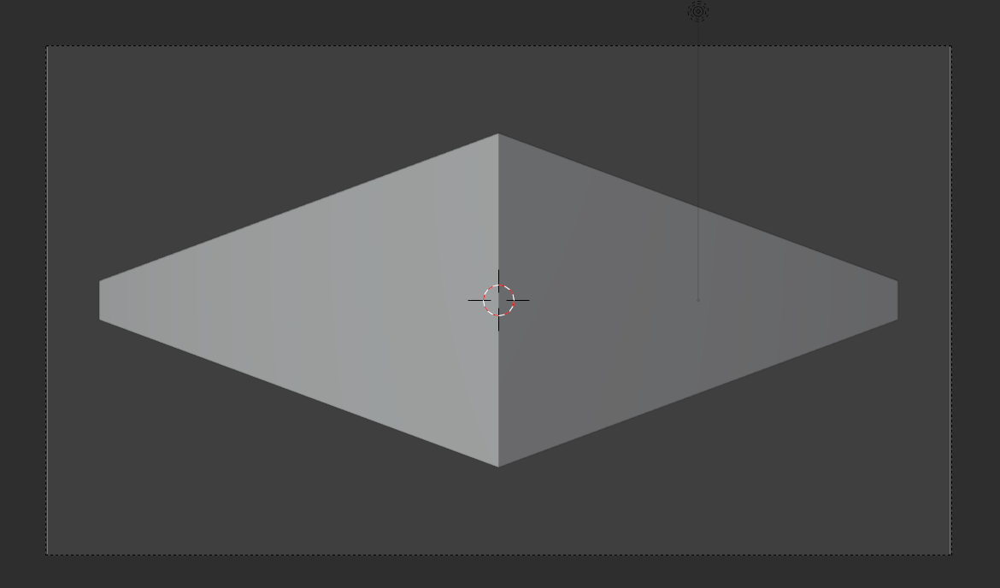

研究 FOV 和消失点
测试发现，FOV 和消失点相对于画布的位置是直接关联的。考虑 Z 轴旋转 45 度的立方体，如果此时镜头的水平 FOV 是 90 度，则消失点正好在画布的垂直边缘上。

FOV 大于 90 度时，这时候两个消失点都在画面内，小于 90 度时，消失点就在画面外了。我们控制消失点和画面的关系，就是控制焦距，就是控制 FOV，而 FOV 和消失点的距离的关系更加直球一些。
假设水平 FOV 为 $\theta$ ，计算能够发现，对于一个 Z 轴旋转 45 度的立方体，有：
下面研究相机的典型焦距对应的 FOV，以确认一下消失点和画面的各距离对应的焦距，从而得到一定的感性经验。
但这里要先得到焦距到对角线和水平 FOV 的公式，实际上：
这里的传感器大小，给出传感器对角线大小时，得到的就是对角线 FOV，给出水平大小时，得到的就是水平 FOV。
假设传感器是全画幅的，它的大小是 36mm×24mm，长宽比是 3：2，对角线大小约为 43.3mm。
考虑 14，24，50，85，200，400mm 焦距，它们对应的 FOV，以及使用这些焦距时 Z 轴旋转 45 度的立方体的消失点的位置为：
| 焦距（mm） | 水平 FOV（度） | 对角线 FOV（度） | 消失点距离和画布宽度比例 |
|---|---|---|---|
| 超广角 14 | 104.3 | 114.2 | 0.8 |
| 广角 24 | 73.7 | 84.1 | 1.3 |
| 标准 50 | 39.6 | 46.8 | 2.8 |
| 中长焦 85 | 23.9 | 28.6 | 4.7 |
| 长焦 200 | 10.3 | 12.3 | 11.1 |
| 超长焦 400 | 5.2 | 6.2 | 22.2 |
这玩意儿或许没有什么实践意义，但至少能帮助我们确定一个初始的消失点的位置（这同时也是确定焦距），并以它作为出发点。
最后，是打这个表的 python 代码：
1 | |
本博客所有文章除特别声明外，均采用 CC BY-NC-SA 4.0 协议 ，转载请注明出处！